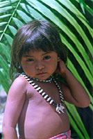
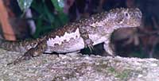

|
Mission
|

Tembé girl with deer bone and seed necklace.
(©1997-98 Campbell Plowden)
|
The Catalyst Grants program channels small grants to locally based, grassroots conservation groups that need a quick infusion of funds to meet an unexpected need or advance a promising initiative.
Problem
Dedicated grassroots groups in the tropics often have limited access to traditional funding sources. They may lack just a small amount of money to kick-start a creative and important biodiversity conservation project, and they can't afford to wait the many months it takes for larger foundations to conduct proposal reviews. Often, these conservation projects are stalled because an unexpected or emergency need arises. These groups need a fast rescue so they don't lose valuable time.
Solutions
| • |
Make available grants of $3,000 or less to conservation groups in the tropics that need help quickly. |
| • |
Provide an easy-to-complete, brief but informative application in both English and Spanish that can be submitted in either language by email, mail, or fax. |
| • |
Require that eligible projects contribute to biodiversity conservation, but be flexible and realistic when deciding which projects to support. |
| • |
Review applications and check references within two weeks or less, so that if they are approved, funds can be transferred within a month of application.
|
Results

"Tama kwaré" (lizard).
(©1997-98 Campbell Plowden)
|
|
|
|
| • |
Awarded over 90 Catalyst Grants worldwide over the past nine years. |
| • |
In 2000, already awarded 10 grants to assist conservation initiatives in nine tropical countries. |
| • |
In 1999 and 2000, awarded 10 grants to help grassroots groups meet the emergency needs of communities and natural areas hit hard by Hurricane Mitch. |
|
Contact
Please feel free to contact program staff with your comments or questions.
If you would like to apply for a Catalyst Grant, please complete and submit an application in English or Spanish.
You can help support the important work of grassroots conservation groups! Please complete the donation form to support the Catalyst Grants program.

Catalyst Grants Program
About | Catalyst Grants Recipients
Guidelines for Applicants: English | En Español
Grant Application Form: English | En Español
Catalyst Grants Donation Form
Back to Conservation Programs
Search | Site Map | Home
Contact the Rainforest Alliance: canopy@ra.org
|
|